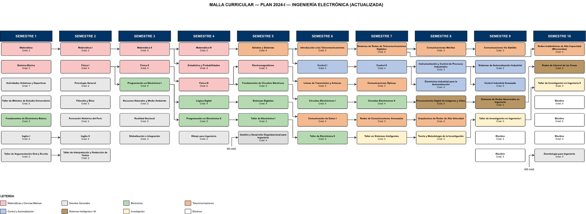

10Semestres académicos
ESCUELA PROFESIONAL DE
INGENIERÍA ELECTRÓNICA
INGENIERÍA ELECTRÓNICA
PLAN CURRICULAR
2024-I ACTUALIZADO
Ingeniería Electrónica
Conoce la propuesta curricular, sus principales cambios y participa en su proceso de socialización.
Actualización•Tecnología•Formación profesional
EL PLAN CURRICULAR
El Plan Curricular en cifras
El Plan 24-1 actualizado mantiene diez semestres académicos y 200 créditos totales.
200Créditos totales
185Créditos obligatorios
15Créditos electivos
ACTUALIZACIÓN DEL PLAN
¿Por qué se actualiza el Plan Curricular?
La actualización responde a los avances tecnológicos y a las nuevas exigencias del mercado laboral, fortaleciendo la formación profesional.
01
Actualización tecnológica
Incorporación de tecnologías emergentes y nuevas áreas de aplicación profesional.
02
Nuevas demandas profesionales
La formación considera los cambios continuos de la ciencia, la tecnología y la industria.
03
Fortalecimiento de la formación
Fortalecimiento de la base teórica e incorporación de contenidos actualizados e innovadores.
04
Nuevas áreas de aplicación
Orientación hacia tecnologías emergentes y nuevas áreas de aplicación profesional.
PLAN 2024-I ACTUALIZADO
Malla Curricular
Vista previa de la malla curricular actualizada de Ingeniería Electrónica.

DOCUMENTACIÓN
Documentos del Plan Curricular
Accede a los documentos proporcionados para la socialización del Plan Curricular 2024-I actualizado.
Plan Curricular 2024-I actualizado
Documento principal del Plan Curricular.
Ver documento →Sumillas de asignaturas
Documento de sumillas proporcionado para el proyecto.
Ver documento →Malla Curricular
Malla 2024-I actualizada proporcionada para el proyecto.
Ver malla →Tabla de equivalencias
Correspondencias para la transición curricular.
Ver documento →PARTICIPACIÓN
Tu opinión es importante
Participa en el proceso de socialización del Plan Curricular 2024-I actualizado.
EstudiantesDocentesEgresadosEmpleadoresComité Consultivo